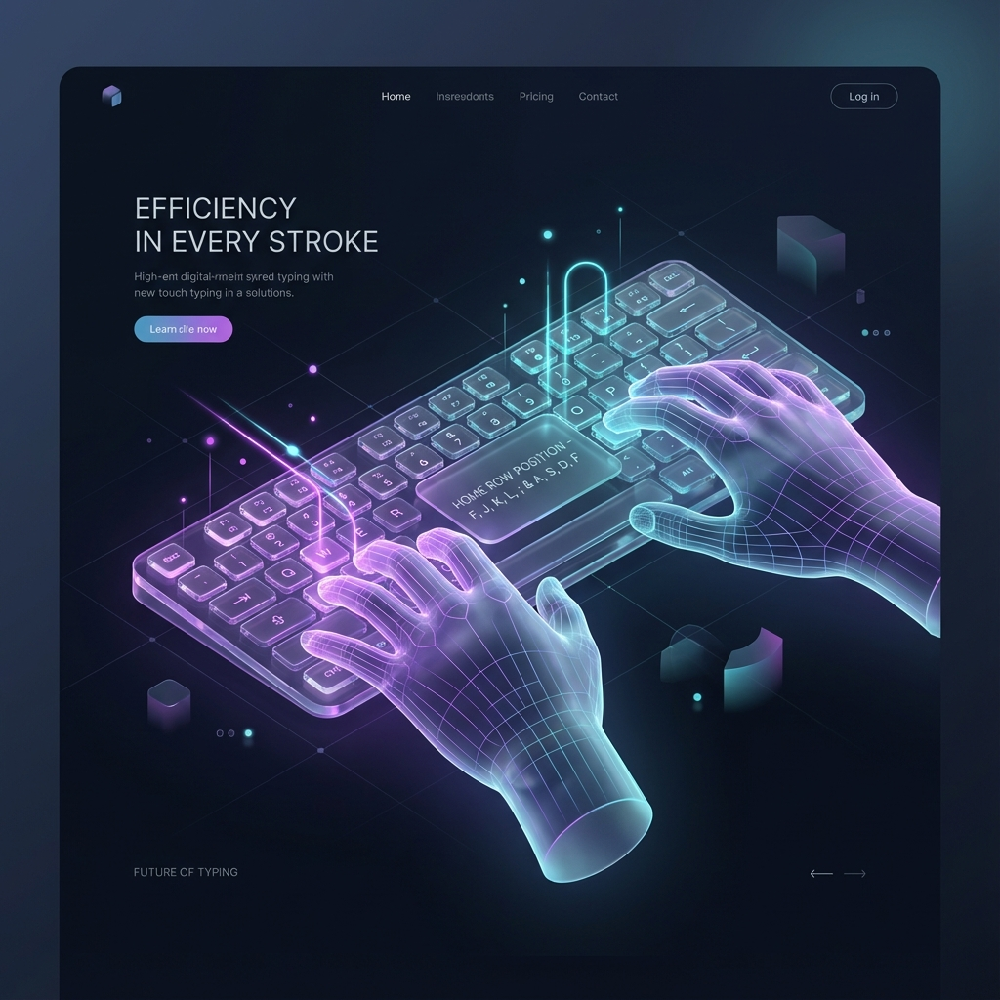

Revolusi Latihan Mengetik
SpeedTyper Z bukan sekadar alat tes kecepatan biasa. Kami menghadirkan sistem Multi-Kategori yang dirancang untuk mensimulasikan berbagai skenario dunia nyata: dari percakapan harian di kategori Normal, teks akademik dan teknis di kategori Advanced, hingga fleksibilitas total di kategori Custom.
Tujuan akhirnya bukan hanya kecepatan, melainkan otomatisasi. Ketika jari Anda tahu letak tombol tanpa diperintah, otak Anda berhenti memikirkan "huruf" dan mulai memikirkan "konsep". Di situlah produktivitas melonjak drastis.
Standar Kecepatan Mengetik
Pemula (0-30 WPM)
Tahap awal belajar. Biasanya masih mencari tombol satu per satu.
Menengah (30-50 WPM)
Kecepatan rata-rata. Mulai hafal letak tombol tapi masih sering salah.
Pro (50+ WPM)
Tingkat profesional. Jari bergerak otomatis tanpa melihat keyboard.
Teknik 10 Jari (Touch Typing)

Kunci kecepatan adalah teknik 10 Jari. Jangan gunakan metode "11 Jari" (hanya dua telunjuk).
Posisi Home Row
Letakkan jari telunjuk kiri di tombol F dan kanan di tombol J.
Jangan Lihat Bawah
Paksa mata Anda tetap di layar. Otak Anda akan memetakan posisi tombol secara permanen.
Konsistensi
Berlatih 10 menit setiap hari jauh lebih efektif daripada 1 jam seminggu sekali.
Fitur Unggulan SpeedTyper Z
Sistem Level Progresif
Dapatkan XP untuk naik level dan buka tantangan WPM yang lebih tinggi secara otomatis.
Advanced & Coding
Kategori khusus untuk melatih kecepatan mengetik syntax koding dan istilah teknis kompleks.
Privasi Total
Data progres tersimpan aman secara lokal di perangkat Anda tanpa perlu koneksi internet.
Custom Challenge
Gunakan teks buatan sendiri untuk melatih kemampuan mengetik materi spesifik Anda.